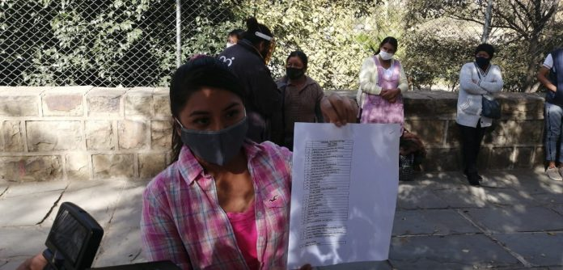

Inicio
Internacional
Nacional
Departamental
Local
Noticias
mapa del coronavirus
Corpus Christi atipico
universidad en Tarija
Tarija están bajo rastreo digital
segunda fase de la cuarentena
Policía Departamental de Tarija
Mensajes de Juventus y Milan contra el racismo en el calentamiento
Bolivia se mantiene en el puesto 75 del ranking FIFA
Tres nuevas carreras anuladas pero la Fórmula 1 mantiene sus planes de la temporada
Hoy: Diez casos en la provincia Cercado

Proveedores de desayuno escolar exigen pago por el mes de marzo
Comerciantes no respetaron el feriado y la Intendencia clausuró sus negocios